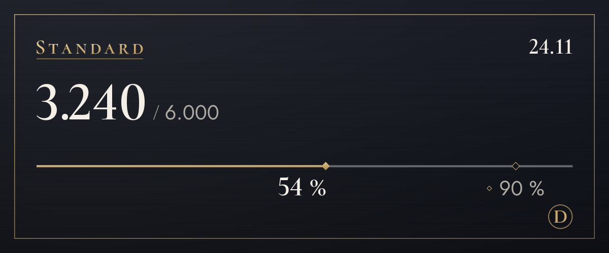

Priser og abonnementer
Start gratis, og skift abonnement, når du har brug for mere.
Tjenesten er i testdrift, så vi tager ikke imod betalinger endnu. Når vi åbner for betalinger, tegner og opsiger du abonnement her på siden. Under testdriften stopper oversættelsen ikke, når du går over grænsen.
Free
0 $
Prøv det først (det tæller ikke at se originalen)
100 oversættelser om måneden (cirka 3 om dagen), 4 toner de første 14 dage
Samme grænse gælder også tekst i billeder (normalt 4 pr. billede) og oversættelse på billeder (normalt 6)
Sådan starter duLite
4,99 $/md.
Vælg en tone for hver server: afslappet med venner, høflig på nye steder
1.200 oversættelser om måneden (cirka 40 om dagen), 4 toner, 20 mere om dagen, når grænsen er nået
Samme grænse gælder også tekst i billeder (normalt 4 pr. billede) og oversættelse på billeder (normalt 6)
Vælg (Lite)Standard
Anbefalet
9,99 $/md.
Rigeligt til at chatte hver dag
6.000 oversættelser om måneden (cirka 200 om dagen), 4 toner, 20 mere om dagen, når grænsen er nået
Samme grænse gælder også tekst i billeder (normalt 4 pr. billede) og oversættelse på billeder (normalt 6)
Vælg (Standard)Plus
14,99 $/md.
Mest plads til dig, der oversætter meget
20.000 oversættelser om måneden (cirka 667 om dagen), 4 toner, 20 mere om dagen, når grænsen er nået
Samme grænse gælder også tekst i billeder (normalt 4 pr. billede) og oversættelse på billeder (normalt 6)
Vælg (Plus)
- Priserne er i amerikanske dollars. Skat for dit land lægges til ved betalingen.
- Betalte abonnementer er månedlige abonnementer, der fornyes automatisk. Du kan opsige når som helst, og så stopper den næste betaling.
- Free-abonnementet bliver aldrig til et betalt abonnement af sig selv.
- Din fortrydelsesret er begrænset for den del, du allerede har brugt, og du kan prøve Free-abonnementet først.
- Oversættelserne laves af AI (Claude fra Anthropic). De kan være forkerte, så tjek originalen, når det er vigtigt.
- Du kan læse mere i Brugervilkår og Refusionspolitik.
Sådan tælles oversættelser
Abonnementernes grænser tælles i oversættelser. En besked oversat til ét sprog er 1 oversættelse.
- Tekst
- 1 pr. beskedLange beskeder tæller 1 mere for hver 200 tegn på koreansk, kinesisk eller japansk, eller for hver 500 tegn på andre sprog. Beskeder uden noget at oversætte tælles ikke med.
- Højreklik
- 1 pr. beskedDet samme som tekst. Det tæller ikke at se originalen eller et andet sprog.
- Tekst i billeder
- Normalt 4 pr. billede3 for at læse et billede plus oversættelsen af den læste tekst. Billeder uden tekst tælles ikke med, og der læses op til 4 billeder pr. besked.
- Oversættelse på billeder
- 6 for én tekstblok3 for læsningen, 1 for oversættelsen og 2 for tegningen. Hver ekstra blok lægger mindst 1 til for sin oversættelse, og hver 16 blokke tæller som ét billede. Ved mere end 16 blokke ser du prisen først, og billedet laves, når du bekræfter (op til 128 blokke). Det tæller ikke at skifte skrifttype.
- Talebeskeder Kommer snart
- 1 pr. sekund lydTransskribering og oversættelse af talebeskeder sendt fra mobilappen er under forberedelse. Når det åbner, lægges oversættelsen af det sagte til, og beskeder uden tale tælles ikke med.
- Dagligt loft
- 200 billederDet tælles pr. person og er det samme på alle abonnementer, så automatiseret massebrug ikke kan stoppe oversættelserne for alle andre.
- Hvem betaler
- Oversættelser, der åbnes fra billedikonerne eller med højreklik, tælles hos den, der trykkede, ikke hos den, der sendte beskeden.
For eksempel
Med 200 oversættelser om dagen
Standard omregnet pr. dag
Nok til at oversætte nogle billeder og stadig chatte hele aftenen.
Med 40 oversættelser om dagen
Lite omregnet pr. dag
Nok til en times chat med venner.

/oversæt forbrug.Ofte stillede spørgsmål
Hvornår åbner I for betalinger?
Tjenesten er i testdrift, så vi tager ikke imod betalinger, og alle bruger Free-abonnementet. Betalingerne åbner, når virksomhedsregistreringen og betalingsudbyderen er på plads, og vi melder datoen ud i nyhederne på supportserveren og her på siden. I Korea betaler man i won, alle andre steder i amerikanske dollars.
Hvordan opsiger jeg?
Når betalingerne er åbnet, opsiger du på abonnementssiden her på hjemmesiden, samme sted som du tegner abonnement. Opsigelsen stopper den næste betaling, og du beholder dit abonnement til slutningen af den periode, du har betalt for. Skærmen Administrer abonnement i bottens indstillingspanel fører også hertil.
Hvordan fungerer refusion?
Du kan få hele din første betaling refunderet inden for 7 dage. Vi refunderer også ved driftsforstyrrelser, eller når tjenesten afviger fra det, der står på denne side. Resten står i Refusionspolitik.
Bliver billeder gemt?
Botten gemmer dem ikke. Billeder sendes til Anthropic, så teksten kan læses, og kun resultatet vises for dig. Intet sendes, før du trykker på knappen. Den læste tekst gemmes heller ikke; kun oversættelsen følger reglen for oversættelsescachen (30 dage). For at et skift af skrifttype kan tegnes med det samme, bliver et billede, du har trykket “Sæt på billedet” på, i hukommelsen i 15 minutter sammen med den læste tekst og dens oversættelse.
Hvem laver oversættelserne?
Det gør AI (Claude fra Anthropic). Den samme AI læser tekst i billeder. Oversættelser kan være forkerte, så tjek originalen, når det er vigtigt. Billeder med indtegnede oversættelser er mærket AI-oversættelse i deres beskrivelse (alt-tekst) og i noten under resultatet.